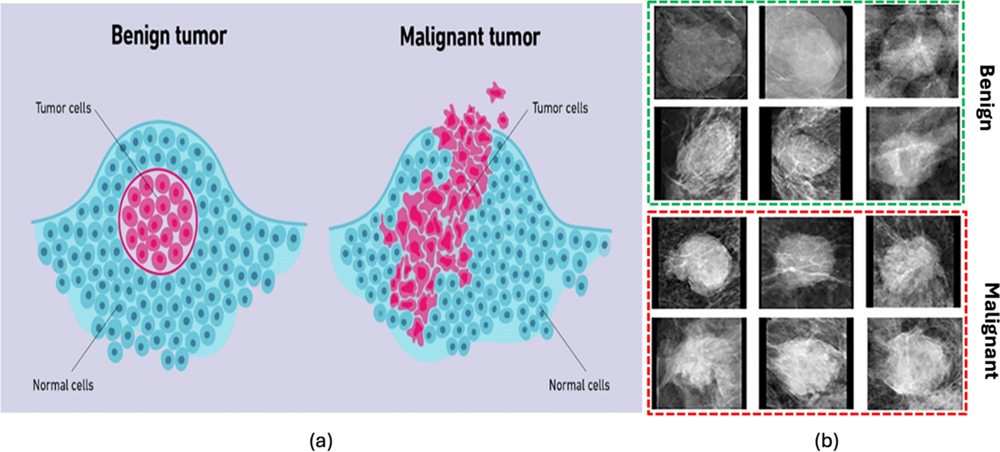
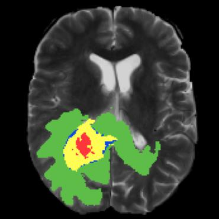
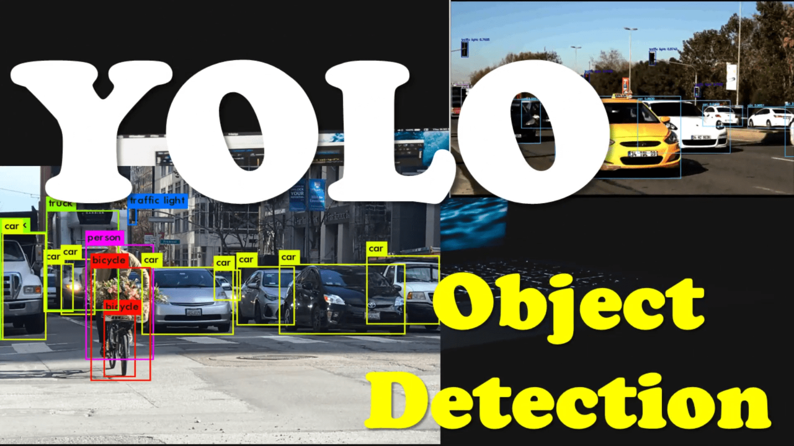
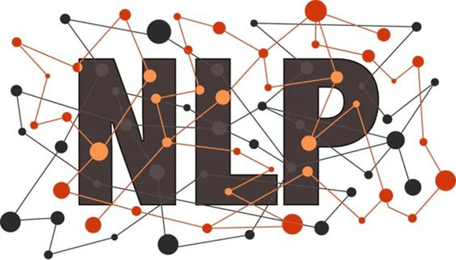
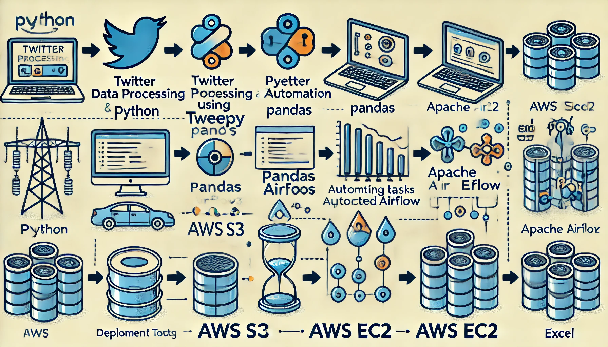
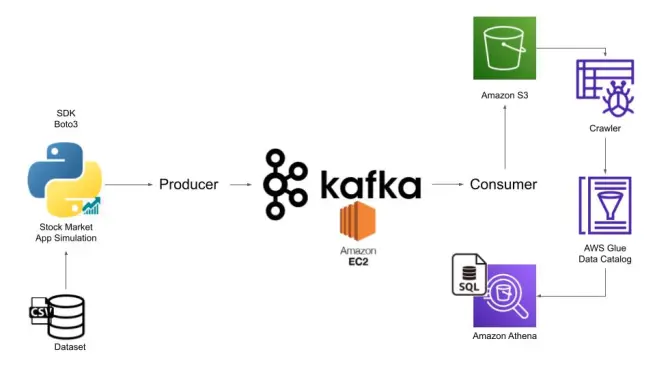
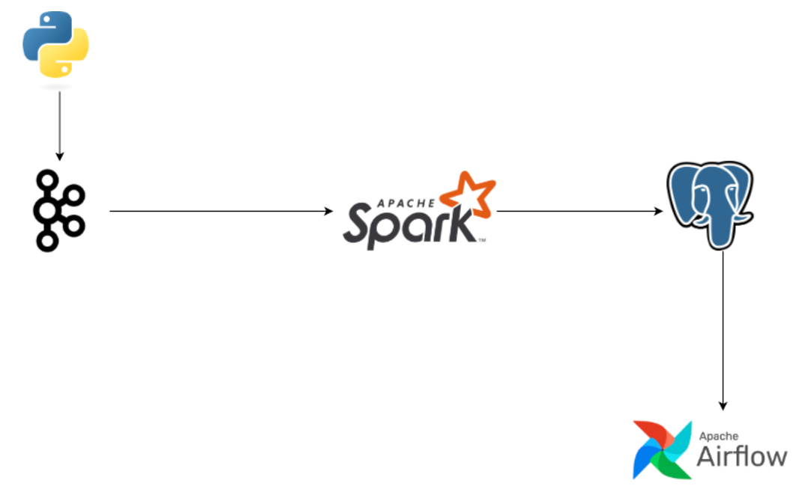

This project focuses on breast cancer analysis and prediction, beginning with EDA to explore key dataset features.
PCA is used for dimensionality reduction, and machine learning algorithms, including Logistic Regression
with GridSearch CV, are applied for model accuracy. Predictions are also performed using TensorFlow, and
results are compared between TensorFlow and Logistic Regression.

Conducted advanced gene expression analysis on the GSE183947
dataset focusing on BRAC1 and BRAC2, streamlining workflows for efficient analysis, and creating
publication-quality visualizations using dplyr and ggplot2 for actionable insights.

This project implements a deep learning approach for segmenting brain tumors in MRI scans. Utilizing a U-Net architecture,
the model processes MRI images to accurately delineate tumor boundaries, facilitating improved diagnosis and treatment planning.
The workflow encompasses data preprocessing, model training, validation, and visualization of segmentation results, demonstrating
the efficacy of convolutional neural networks in medical image analysis.

This project implements YOLO (You Only Look Once) for real-time object detection using OpenCV and pre-trained models.
It covers model configuration, image preprocessing, and object detection, visualizing results with bounding boxes and class labels.
The project highlights YOLO's efficiency for applications in autonomous systems, surveillance, and computer vision.
This project provides valuable insights into customer preferences and satisfaction trends in the airline industry, helping stakeholders identify key areas for improvement. The dashboard’s interactivity allows users to customize their view based on specific interests, making it a powerful tool for data-driven decision-making.

Developed an NLP-based chatbot for answering game-related questions using a BERT model. Starting with JSON data, I transformed it to CSV format and conducted exploratory data analysis with histograms and word clouds to understand question-answer patterns. I labeled data, built a data loader, and configured training settings. The chatbot effectively answers user queries about the game, demonstrating practical NLP and machine learning skills.

In this project, I utilized SQL to clean and prepare Nashville-based data for further analysis. The process involved identifying and handling missing values, standardizing text formats, correcting inconsistencies in data entries. Key steps included deduplication, formatting adjustments such as date. This project showcases my SQL proficiency in transforming raw data into a clean, structured format suitable for meaningful analysis and insights.

Built an data pipeline to extract Twitter data, transforming it into a clean and structured Excel file format. Leveraging Apache Airflow for task scheduling. The cleaned data was then uploaded to an Amazon S3 bucket for centralized storage and access. The entire system was deployed on an Amazon EC2 instance, enabling efficient execution and continuous monitoring. This project highlights end-to-end data engineering capabilities, combining data extraction, transformation, and cloud-based storage and deployment.
Published a sales data analysis project on Databricks, leveraging PySpark for data preprocessing and feature engineering. This project involved cleaning and transforming sales data, using PySpark’s aggregation functions to identify and visualize customer frequency trends. The project highlights foundational skills in PySpark and Databricks for analyzing and interpreting data insights in sales..

Analyzed NYC Yellow Taxi trip data using PySpark,
performing data cleaning, transformation, and aggregation with Spark SQL. Visualized key insights using
Matplotlib and Seaborn, and built machine learning models with Spark MLlib to predict fare amounts
efficiently.

Developed a real-time stock market data
pipeline using AWS and Apache Kafka. Streamed stock data with a Kafka producer, processed it using a Kafka
consumer, and stored it in Amazon S3. Utilized AWS Glue for data processing and executed SQL queries with
Amazon Athena to extract insights and trends. The pipeline was fully managed, scalable, and enabled quick
querying of stock data.

Developed a
real-time stock market data pipeline by fetching stock data from an API and streaming it through Apache Kafka.
Processed the data using PySpark and stored it in PostgreSQL using Apache Airflow. Implemented an alert
system in Airflow to log price drops exceeding 5%, ensuring timely monitoring of market fluctuations.